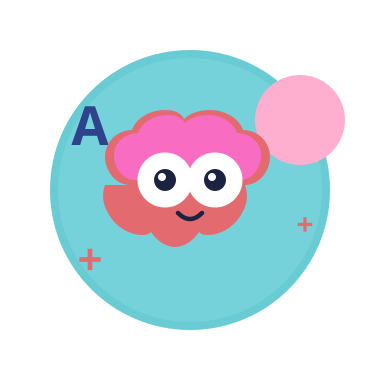

Club de aprendizaje en Cúcuta
Acompáñanos a descubrir el genio que hay en ti
Acompañamos a niñas, niños y sus familias con atención cercana, profesional y a su propio ritmo.

Conócenos
Un espacio de apoyo integral para el aprendizaje
Open Brain es una organización de carácter pluralista en Cúcuta dedicada a mejorar el entendimiento y manejo de las dificultades de aprendizaje en niños, niñas y adolescentes.
Contamos con un equipo de tres profesores y especialistas comprometidos en brindar acompañamiento pedagógico, terapéutico y estimulación adecuada, orientando además a las familias en cada etapa escolar y formativa.